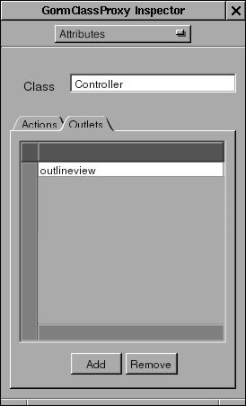

5 - Overview#
NSOutlineView is a subclass of NSTableView. The only difference is that the rows of NSOutlineView act like a data-structure tree of multiple children. In NSTableView, we can use an array of dictionary to store the data of NSTableView. In NSOutlineView, we need a tree strcuture. Here, I will make an application to display several system information in outline view.
First, create “New Application” in Gorm and drag a NSOutlineView into the window
Figure 4-44. Interface of Overview

Change the Autoresizing attribute of NSOutlineView
Figure 4-45. Autoresizing attribute of NSOutlineView

Double-click on the column to select
Figure 4-46. Select column in NSOutlineView

Uncheck the “Editable” and change the identifier to “Attribute” in the first column and “Value” in the second column
Figure 4-47. Change attribute of NSTableColumn

The makeing of interface is done. Now, I need a controller for the interface. Create a subclass of NSObject, called “Controller”
Figure 4-48. Create subclass in Gorm

Add a outlet called “outlineview”
Figure 4-49. Create outlet

Create an instance of Controller, and connect the outlet “outlineview” to the outline view in the window. Be sure that you connect to outline view, not the scroll view or the table column
Figure 4-50. Connect outlet to NSOutlineView

Since NSOutlineView is the subclass of NSTableView, we need to assing the data source and delegate of NSOutlineView by connecting the “dataSource” and “delegate” from NSOutlineView to Controller.
Figure 4-51. Connect data source of NSOutlineView

Finally, we can assign Controller as the delegate of NSApp
Figure 4-52. Assign delegate of NSApp

Now, save the Gorm file as “Overview.gorm”, and generate the files of Controller.
I need a data source for the NSOutlineView. I can do that by creating a tree sturcture with very simple nodes
Node.h
#ifndef _Overview_Node_
#define _Overview_Node_
#include <Foundation/NSObject.h>
@class NSArray;
@class NSMutableArray;
@class NSString;
@interface Node: NSObject
{
NSString *name;
NSString *value;
NSMutableArray *children;
}
- (void) setName: (NSString *) name;
- (NSString *) name;
- (void) setValue: (NSString *) value;
- (NSString *) value;
- (void) addChild: (id) child;
- (NSArray *) children;
@end
#endif /* _Overview_Node_ */
Node.m
#include "Node.h"
#include <Foundation/Foundation.h>
@implementation Node
- (id) init
{
self = [super init];
children = [NSMutableArray new];
return self;
}
- (void) setName: (NSString *) string
{
ASSIGN(name, string);
}
- (NSString *) name
{
return name;
}
- (void) setValue: (NSString *) string
{
ASSIGN(value, string);
}
- (NSString *) value
{
return value;
}
- (void) addChild: (id) child
{
[children addObject: child];
}
- (NSArray *) children
{
return children;
}
- (void) dealloc
{
RELEASE(name);
RELEASE(value);
RELEASE(children);
[super dealloc];
}
@end
Now, I can build a tree by connect these nodes
In NSTableView, there are two necessary methods to display the data:
- (int) numberOfRowsInTableView: (NSTableView *) tableView;
- (id) tableView: (NSTableView *) tableView
objectValueForTableColumn: (NSTableColumn *) column
row: (int) row;
In NSOutlineView, due to the tree-like structure, there are 4 mecessary methods to display the data:
- (id)outlineView: (NSOutlineView *)outlineView
child: (int)index
ofItem: (id)item;
- (BOOL)outlineView: (NSOutlineView *)outlineView
isItemExpandable: (id)item;
- (int)outlineView: (NSOutlineView *)outlineView
numberOfChildrenOfItem: (id)item;
- (id)outlineView: (NSOutlineView *)outlineView
objectValueForTableColumn:(NSTableColumn *)tableColumn
byItem:(id)item;
“Item” means the node in the data source. If item is nil, it means it is root node. Starting from root node, NSOutlineView ask each node how many children it has ? is it expandable ? display the object value of the node, and get the next child. After it goes over the nodes, it finish displaying the data source.
So I have to build the tree first:
Controller.h
/* All Rights reserved */
#include <AppKit/AppKit.h>
@class Node;
@interface Controller : NSObject
{
id outlineview;
Node *root;
}
@end
Controller.m
/* All Rights reserved */
#include <AppKit/AppKit.h>
#include "Controller.h"
#include "Node.h"
@implementation Controller
- (id) init
{
Node *child, *temp;
self = [super init];
root = [Node new];
child = [Node new];
[child setName: @"System"];
/* Add operating system */
temp = [Node new];
[temp setName: @"Operating System"];
[temp setValue: [[NSProcessInfo processInfo] operatingSystemName]];
[child addChild: temp];
RELEASE(temp);
/* Add user name */
temp = [Node new];
[temp setName: @"User Name"];
[temp setValue: NSUserName()];
[child addChild: temp];
RELEASE(temp);
/* Add home directory */
temp = [Node new];
[temp setName: @"Home Directory"];
[temp setValue: NSHomeDirectory()];
[child addChild: temp];
RELEASE(temp);
[root addChild: child];
RELEASE(child);
return self;
}
- (void) dealloc
{
RELEASE(root);
[super dealloc];
}
I create a root node, add an “System” node. Then add three nodes into “System” node. That’s a very simple tree for now. Once I have a tree, I can display it in outline view.
Controller.m
- (id) outlineView: (NSOutlineView *) outlineView
child: (int) index
ofItem: (id) item
{
/* Root */
if (item == nil)
return [[root children] objectAtIndex: index];
/* Others */
if ([[item children] count])
return [[item children] objectAtIndex: index];
else
return nil;
}
- (BOOL) outlineView: (NSOutlineView *) outlineView
isItemExpandable: (id) item
{
/* Root */
if (item == nil)
return YES;
/* Others */
if ([[item children] count])
return YES;
else
return NO;
}
- (int) outlineView: (NSOutlineView *) outlineView
numberOfChildrenOfItem: (id) item
{
/* Root */
if (item == nil)
return [[root children] count];
/* Others */
return [[item children] count];
}
- (id) outlineView: (NSOutlineView *) outlineView
objectValueForTableColumn: (NSTableColumn *) tableColumn
byItem: (id) item
{
if ([[tableColumn identifier] isEqualToString: @"Attribute"])
return [(Node *)item name];
else
return [item value];
}
These methods are straight-forward. Just need to take care the case when item is nil, which means it is root node.
Now, this application is ready to go. You can finish the main.m and
GNUmakefile. Here is the source code:
Overview-src.tar.gz
Actually I can get more information
Controller.m
- (id) init
{
Node *child, *temp;
NSCalendarDate *date;
NSRect frame;
id object;
#define ADD_NAME_VALUE(name, value) \
temp = [Node new]; \
[temp setName: name]; \
[temp setValue: value]; \
[child addChild: temp]; \
RELEASE(temp);
self = [super init];
root = [Node new];
child = [Node new];
[child setName: @"System"];
/* operating system */
ADD_NAME_VALUE(@"Operating System", [[NSProcessInfo processInfo] operatingSystemName]);
/* user name */
ADD_NAME_VALUE(@"User Name", NSUserName());
/* home directory */
ADD_NAME_VALUE(@"Home Directory", NSHomeDirectory());
/* gnustep root directory */
ADD_NAME_VALUE(@"GNUstep Directory", NSOpenStepRootDirectory());
/* host and address */
ADD_NAME_VALUE(@"Host", [[NSHost currentHost] name]);
ADD_NAME_VALUE(@"Address", [[NSHost currentHost] address]);
/* Screen */
ADD_NAME_VALUE(@"Screen Depth", [[NSNumber numberWithInt: [[NSScreen mainScree
n] depth]] description]);
frame = [[NSScreen mainScreen] frame];
object = [NSString stringWithFormat: @"%d x %d", (int)frame.size.width, (int)f
rame.size.height];
ADD_NAME_VALUE(@"Screen Size", object);
[root addChild: child];
RELEASE(child);
child = [Node new];
[child setName: @"Date & Time"];
/* Time Zone */
ADD_NAME_VALUE(@"System Time Zone", [[NSTimeZone systemTimeZone] timeZoneName]
);
ADD_NAME_VALUE(@"Local Time Zone", [[NSTimeZone localTimeZone] timeZoneName]);
/* Date */
date = [NSCalendarDate calendarDate];
[date setCalendarFormat: @"%a, %b %e, %Y"];
ADD_NAME_VALUE(@"Date", [date description]);
[date setCalendarFormat: @"%H : %M : %S"];
ADD_NAME_VALUE(@"Time", [date description]);
[root addChild: child];
RELEASE(child);
child = [Node new];
[child setName: @"Text Related"];
/* default encoding */
ADD_NAME_VALUE(@"Default Encoding", [NSString localizedNameOfStringEncoding: [NSString defaultCStringEncoding]]);
/* Font */
ADD_NAME_VALUE(@"System Font", [[NSFont systemFontOfSize: [NSFont systemFontSize]] displayName]);
ADD_NAME_VALUE(@"System Font Size", [[NSNumber numberWithFloat: [NSFont systemFontSize]] description]);
ADD_NAME_VALUE(@"System Font Encoding", [[NSFont systemFontOfSize: [NSFont systemFontSize]] encodingScheme]);
ADD_NAME_VALUE(@"System Bold Font", [[NSFont boldSystemFontOfSize: [NSFont systemFontSize]] displayName]);
[root addChild: child];
RELEASE(child);
return self;
}
Now, it looks better:
Figure 4-53. Overview

You will notice that when window is close, the application is not quit. We can make the application quit when last window closes.
Controller.m
- (BOOL) applicationShouldTerminateAfterLastWindowClosed: (id) sender
{
return YES;
}
This is the method for NSApp delegate. Therefore, Controller must be the delegate of NSApp. I assign it already in Gorm